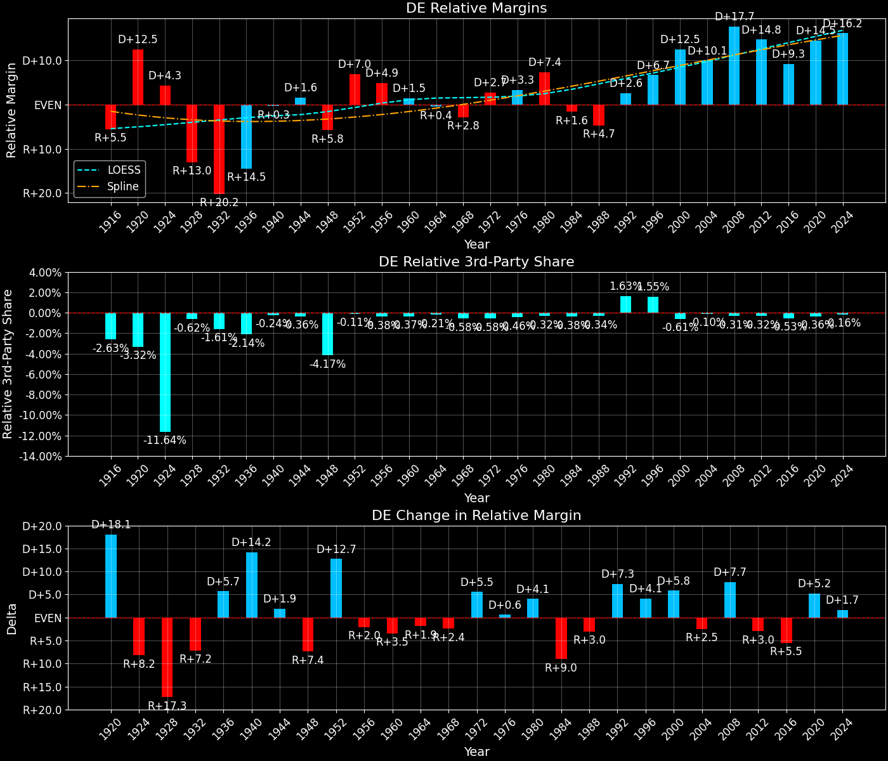

Delaware (DE) — Statewide

Margins · 3P share · Pres. deltas

Relative margins · Relative 3P · Rel. deltas
Delaware (DE) — Total Data
| Year | EVs | D | R | Margin | Rel. Margin | Nat. Margin | Margin Δ | Rel. Margin Δ | Nat. Margin Δ | Total votes |
|---|---|---|---|---|---|---|---|---|---|---|
| 1968 | 3 | 89,194(41.6%) | 96,714(45.1%) | R+3.5 | R+2.9 | R+0.6 | 214,367 | |||
| 1972 | 3 | 92,283(39.2%) | 140,357(59.6%) | R+20.4 | D+3.1 | R+23.5 | R+16.9 | D+6.0 | R+23.0 | 235,516 |
| 1976 | 3 | 122,596(52.1%) | 109,831(46.6%) | D+5.4 | D+3.2 | D+2.2 | D+25.8 | D+0.1 | D+25.7 | 235,509 |
| 1980 | 3 | 105,754(44.9%) | 111,252(47.2%) | R+2.3 | D+7.6 | R+9.9 | R+7.8 | D+4.3 | R+12.1 | 235,668 |
| 1984 | 3 | 101,656(39.9%) | 152,190(59.8%) | R+19.9 | R+1.7 | R+18.1 | R+17.5 | R+9.3 | R+8.2 | 254,572 |
| 1988 | 3 | 108,647(43.5%) | 139,639(55.9%) | R+12.4 | R+4.7 | R+7.7 | D+7.4 | R+2.9 | D+10.4 | 249,891 |
| 1992 | 3 | 126,054(43.5%) | 102,313(35.3%) | D+8.2 | D+2.6 | D+5.6 | D+20.6 | D+7.3 | D+13.3 | 289,735 |
| 1996 | 3 | 140,355(51.8%) | 99,062(36.5%) | D+15.2 | D+6.7 | D+8.6 | D+7.0 | D+4.1 | D+3.0 | 271,084 |
| 2000 | 3 | 180,068(55.0%) | 137,288(41.9%) | D+13.1 | D+12.5 | D+0.5 | R+2.2 | D+5.9 | R+8.0 | 327,622 |
| 2004 | 3 | 200,152(53.3%) | 171,660(45.7%) | D+7.6 | D+10.1 | R+2.5 | R+5.5 | R+2.5 | R+3.0 | 375,270 |
| 2008 | 3 | 255,459(61.9%) | 152,374(36.9%) | D+25.0 | D+17.7 | D+7.3 | D+17.4 | D+7.7 | D+9.7 | 412,616 |
| 2012 | 3 | 242,584(58.6%) | 165,484(40.0%) | D+18.6 | D+14.8 | D+3.9 | R+6.4 | R+3.0 | R+3.4 | 413,921 |
| 2016 | 3 | 235,603(53.4%) | 185,127(41.9%) | D+11.4 | D+9.3 | D+2.1 | R+7.2 | R+5.4 | R+1.8 | 441,590 |
| 2020 | 3 | 296,268(58.8%) | 200,603(39.8%) | D+19.0 | D+14.5 | D+4.4 | D+7.6 | D+5.2 | D+2.3 | 504,010 |
| 2024 | 3 | 289,758(56.5%) | 214,351(41.8%) | D+14.7 | D+16.2 | R+1.5 | R+4.3 | D+1.7 | R+6.0 | 512,912 |
Column explanations
- Year
- Election year.
- EVs
- Number of electoral votes allocated to this state or unit.
- D
- Number of votes for the Democratic candidate (raw count(pct%)).
- R
- Number of votes for the Republican candidate (raw count(pct%)).
- Margin
- Margin between the two major-party candidates, including third-party votes ((D - R)/total).
- Rel. Margin
- The presidential margin relative to the national presidential margin (Margin - Nat. Margin).
- Nat. Margin
- The national presidential margin for that year, including third-party votes ((D_total - R_total)/total_votes).
- Δ
- Change (delta) in the value from the previous election year. Blank if no data for previous year.
- Total votes
- Total voter turnout or ballots cast (when provided).
Delaware (DE) — Third-Party Data
| Year | Other votes | 3P Share | 3P Nat. Share | 3P Rel. Share |
|---|---|---|---|---|
| 1968 | 28,459(13.3%) | T+13.3 | T+13.6 | T-0.3 |
| 1972 | 2,876(1.2%) | T+1.2 | T+0.1 | T+1.1 |
| 1976 | 3,082(1.3%) | T+1.3 | T+0.3 | T+1.0 |
| 1980 | 18,662(7.9%) | T+7.9 | T+7.0 | T+0.9 |
| 1984 | 726(0.3%) | T+0.3 | T+0.1 | T+0.2 |
| 1988 | 1,605(0.6%) | T+0.6 | T+0.2 | T+0.4 |
| 1992 | 61,368(21.2%) | T+21.2 | T+19.2 | T+1.9 |
| 1996 | 31,667(11.7%) | T+11.7 | T+9.7 | T+2.0 |
| 2000 | 10,266(3.1%) | T+3.1 | T+3.7 | T-0.5 |
| 2004 | 3,458(0.9%) | T+0.9 | T+0.8 | T+0.1 |
| 2008 | 4,783(1.2%) | T+1.2 | T+1.4 | T-0.2 |
| 2012 | 5,853(1.4%) | T+1.4 | T+1.6 | T-0.2 |
| 2016 | 20,860(4.7%) | T+4.7 | T+5.5 | T-0.8 |
| 2020 | 7,139(1.4%) | T+1.4 | T+1.8 | T-0.4 |
| 2024 | 8,803(1.7%) | T+1.7 | T+1.9 | T-0.2 |
Column explanations
- Year
- Election year.
- Other votes
- Number of votes for third-party (other) candidates (raw count(pct%)).
- 3P Share
- Share of the vote received by third-party (other) candidates.
- 3P Nat. Share
- The national third-party share for that year (3P votes / total votes).
- 3P Rel. Share
- Third-party share relative to the national third-party share (3P share - Nat. 3P share).
Two-party margins · relative · deltas
Delaware (DE) — Two-Party Data
| Year | 2-Party Margin | 2-Party Nat. Margin | 2-Party Rel. Margin | 2-Party Margin Δ | 2-Party Nat. Margin Δ | 2-Party Rel. Margin Δ |
|---|---|---|---|---|---|---|
| 1968 | R+4.0 | R+0.7 | R+3.4 | |||
| 1972 | R+20.7 | R+23.6 | D+2.9 | R+16.6 | R+22.9 | D+6.3 |
| 1976 | D+5.5 | D+2.2 | D+3.3 | D+26.2 | D+25.8 | D+0.4 |
| 1980 | R+2.5 | R+10.6 | D+8.1 | R+8.0 | R+12.8 | D+4.8 |
| 1984 | R+19.9 | R+18.1 | R+1.8 | R+17.4 | R+7.5 | R+9.9 |
| 1988 | R+12.5 | R+7.8 | R+4.7 | D+7.4 | D+10.4 | R+2.9 |
| 1992 | D+10.4 | D+6.9 | D+3.5 | D+22.9 | D+14.7 | D+8.2 |
| 1996 | D+17.2 | D+9.5 | D+7.8 | D+6.9 | D+2.6 | D+4.3 |
| 2000 | D+13.5 | D+0.5 | D+12.9 | R+3.8 | R+8.9 | D+5.2 |
| 2004 | D+7.7 | R+2.5 | D+10.1 | R+5.8 | R+3.0 | R+2.8 |
| 2008 | D+25.3 | D+7.4 | D+17.9 | D+17.6 | D+9.8 | D+7.8 |
| 2012 | D+18.9 | D+3.9 | D+15.0 | R+6.4 | R+3.4 | R+3.0 |
| 2016 | D+12.0 | D+2.2 | D+9.8 | R+6.9 | R+1.7 | R+5.2 |
| 2020 | D+19.3 | D+4.5 | D+14.7 | D+7.3 | D+2.3 | D+5.0 |
| 2024 | D+15.0 | R+1.6 | D+16.5 | R+4.3 | R+6.1 | D+1.8 |
Column explanations
- Year
- Election year.
- 2-Party Margin
- Margin between the two major-party candidates, ignoring third-party votes ((D - R)/(D + R)).
- 2-Party Nat. Margin
- The national presidential margin for that year, including third-party votes ((D_total - R_total)/total_votes).
- 2-Party Rel. Margin
- The presidential margin relative to the national presidential margin (Margin - Nat. Margin).
- Δ
- Change (delta) in the value from the previous election year. Blank if no data for previous year.